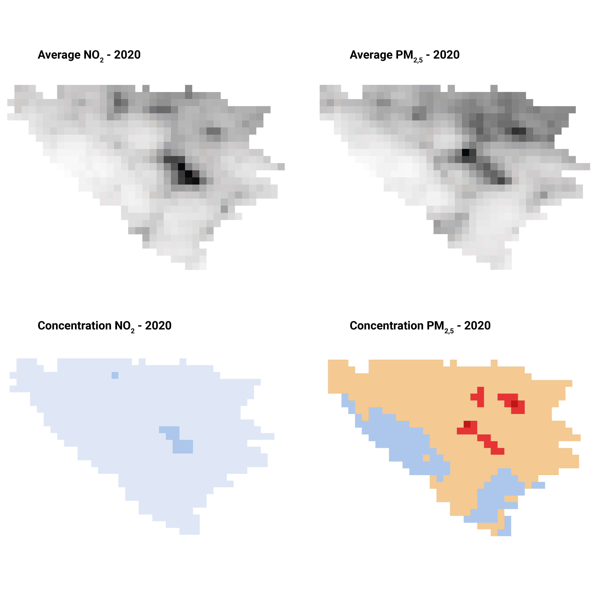
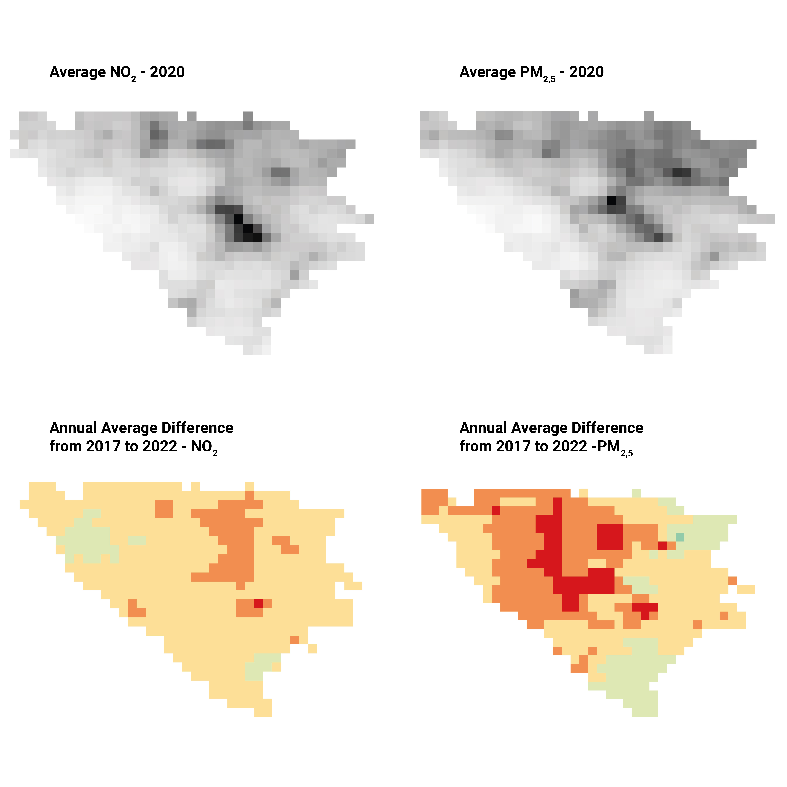
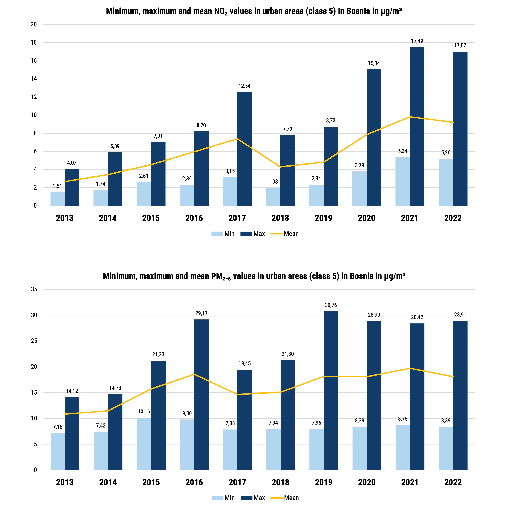
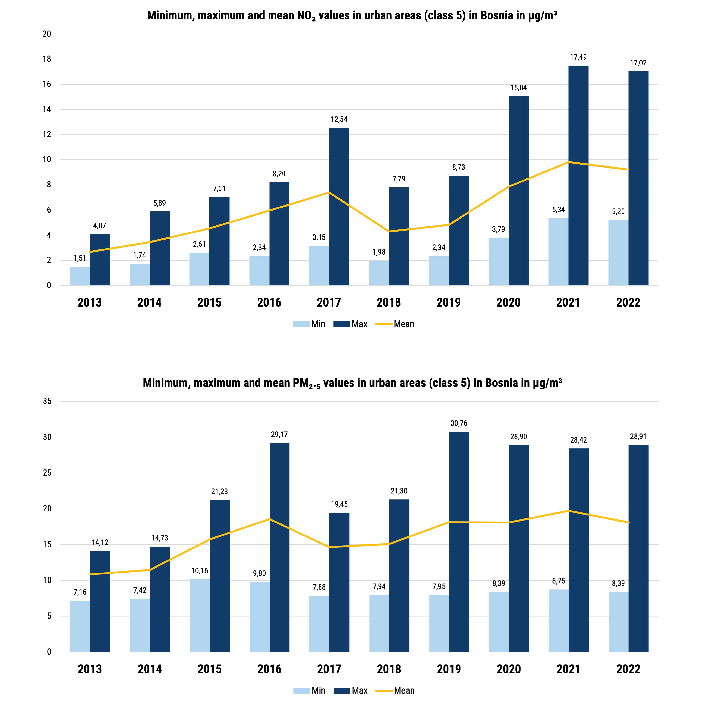

Metodology
This section describes the key steps followed in our GIS-based analysis, including data collection, spatial
preprocessing, pollutant exposure mapping,
and visualization techniques used to assess population
exposure in Bosnia and Herzegovina.
Main data used
This section shows the main data we used to do our analysis and the coordinate reference system

EEA CAMS
Copernicus Atmosphere Monitoring Service (CAMS) is an EU programme that provides
free, high-resolution data on air quality using satellite and ground-based observations.
In this project, we used CAMS reanalysis data (2013–2022) to map long-term exposure to NO₂ and PM₂.₅
in Bosnia and Herzegovina. This dataset combines past observations and models to give consistent,
reliable information on pollutant levels over time.
ESA CCI Land Cover
ESA CCI Land Cover provides global maps classifying land into 22 categories,
updated yearly with quality indicators to ensure reliability. It combines data from multiple satellite
sensors over time to maintain consistency.
In this project, we used these maps to analyze land use and its relation to air pollution
exposure in Bosnia and Herzegovina.
Learn More
WorldPop
WorldPop provides free spatial data estimating population counts per grid cell from
2000 to 2020, using a global Geographic Coordinate System (WGS84).
In this project, we used WorldPop data to analyze population distribution in Bosnia and
Herzegovina, supporting our assessment of exposure to air pollution by linking population density with
pollutant levels.
Learn More
Units: Geographic
Method: Lat/long
Celestial body: Earth
Accuracy: Based on the World Geodetic System 1984 ensemble (EPSG:6326), with a limited accuracy of up to 2 meters
QGIS map representation of the given data
This section shows the visual representation of the datasets used in the analysis, as displayed in QGIS.
EEA CAMS NO2
Visual representation of NO₂ concentrations across Bosnia and Herzegovina, visualized in µg/m³.
EEA CAMS PM2,5
Visual representation of PM₂.₅ concentrations across Bosnia and Herzegovina, visualized in µg/m³.

ESA CCI Land Cover
Land use classification based on ESA Climate Change Initiative.

WorldPop
Population density raster showing number of people per 100m pixel in Bosnia and Herzegovina.
OUR ELABORATIONS
Methodological Workflow for Mapping Air Pollution (NO₂ and PM₂.₅)
 
Step 1 – Pollution data processing
1.1. From CAMS netCDF to yearly aggregated pollutants
- Data source: Downloaded monthly-aggregated NetCDF files for NO₂ and PM₂.₅ from the CAMS European Air Quality Reanalysis Dataset.
- Temporal aggregation (monthly): daily data were averaged to generate monthly mean maps for each pollutant, using "Mesh Calculator" to compute the monthly means for December 2022 (the only month missing).
- Change the format: from mesh to tif, with "Rasterize mesh dataset" for NO₂ and PM₂.₅ for December 2022 (the only month missing).
- Projection Alignment: All rasters were reprojected to EPSG:4326 (WGS 84) for consistency with population and land cover datasets.
- Clipping to Study Area: All layers were spatially clipped using the official vector boundary of the assigned case study (Bosnia and Herzegovina), with "Clip Raster by Mask Layer". This reduced dataset size and improved performance.
- Temporal aggregation (yearly): monthly-aggregated data were averaged to generate annual mean maps for each pollutant, using "r.series" to compute the annual means for each year (2013–2022) and each pollutant (NO₂, PM₂.₅).
1.2. From yearly aggregated pollutants to yearly concentration maps
- Data source: Loaded all the tif files for each pollutant for the years 2013–2020.
- Reclassification: Reclassified the yearly maps into 5 classes according to EU guidelines, using "Reclassify by table".

NO₂: 40 µg/m³
PM₂.₅: 25 µg/m³
1.3. From yearly average maps to Annual Average Difference 2017-2021
- Data source: Yearly average maps for each pollutant between 2017 and 2022.
- Average: Calculated the difference between the annual average concentration in 2022 and the mean of the previous years, using "Raster Calculator".

 

Step 2 – Land cover data processing
2.1 From ESA CCI Land Cover to IPCC Reclassification
- Data source: Downloaded the ESA CCI Land Cover NetCDF for the year 2022 from the Copernicus Climate Data Store and imported the "lccs_class".
- Projection: Reprojected the layers to EPSG:4326
- Clipping: Clipped the layers to the case study area (Bosnia and Herzegovina).
- Reclassification: Reclassified the land cover classes to IPCC (Intergovernmental Panel on Climate Change) schema using “Reclassify by table”.

2.2 Spatial Alignment – Resampling for Consistent Resolution
- Data source: Loaded the yearly average maps for each pollutant and the land cover data reclassified.
- Resolution check: Noted different spatial resolutions between CAMS pollutant maps (≈1 km/pixel) and ESA CCI Land Cover data (≈300 m/pixel).
- Resampling: Resampled the CAMS layers to match the land cover's resolution, using "Wrap (Reproject)".
2.3 From Land Cover to Air Quality: Zonal Statistics
- Data source: Loaded ESA CCI Land Cover 2022 and yearly CAMS pollutant rasters (2013–2022).
- Polygonize: Converted the Land Cover raster to vector using "Polygonize (raster to vector).
- Selection: Selected the Settlement (Class 5), inverted selection, and deleted other classes.
- Dissolve: Dissolved the vector polygons using "Dissolve".
- Export: Exported the final vector layer as a GeoPackage.
- Zonal statistics: Calculated zonal statistics for the built-up areas (class 5) using the CAMS pollutant rasters, using "Zonal Statistics".
- Joins: Performed spatial joins between the built-up areas (class 5) and the CAMS pollutant rasters, using "Join".
- Visualization: Created bar charts to represent the relationship between land cover and air quality, using Excel.


Step 3 – Population Exposure to pollutants
3.1. From WorldPop to Population Classes (2020)
- Data source: Downloaded the WorldPop Population Counts (Unconstrained) dataset for the year 2020 for Bosnia and Herzegovina.
- Classification: The population raster was classified into 5 population density classes using "r.quantiles".
- Reclassification: Based on the computed quantile thresholds, a reclassified raster was generated using “Reclassify by table”, assigning class values from 1 (lowest density) to 5 (highest density).
3.2. Zonal Statistics per Administrative Region
- Data source: Downloaded GAUL Level 2 administrative boundaries from FAO GAUL for Bosnia and Herzegovina.
- Zonal statistics: Calculated zonal statistics for the population (quantiles), based on the GAUL administrative boundaries (Level 2) using "Zonal Statistics".
- Zonal statistics: Calculated zonal statistics for the pollutants (concentration map of 2020), based on the previous layer (population statistics) using "Zonal Statistics".

3.3. From Zonal Statistics to Bivariate Map
- Data source: Loaded zonal statistics layers from previous step.
- New layer: Created a new layer using "field calculator".
- Expression: Computed the bivariate, using the formula: “pol_class” *10 +“pop_class”.
- Visualization: Loaded the predefined legend and visualized the bivariate map.
3.4. Population Exposure Pie Chart
- Data source: Loaded Vector layer containing the bivariate, population_class_median and pollutant_class_max attributes for each administrative region, computed in Step 3.3.
- Dissolve: Dissolved the bivariate layer to obtain at maximum only 5 features (one per each pollutant class), using "dissolve".
- Zonal Statistics: Computed zonal statistics using the dissolved pollutant bivariate layer together with the original population layer (not quantiles).
- Visualization: Created pie charts to visualize the percentage of the population exposed to each pollutant concentration class (based on pop_sum values), using "DataPlotly".